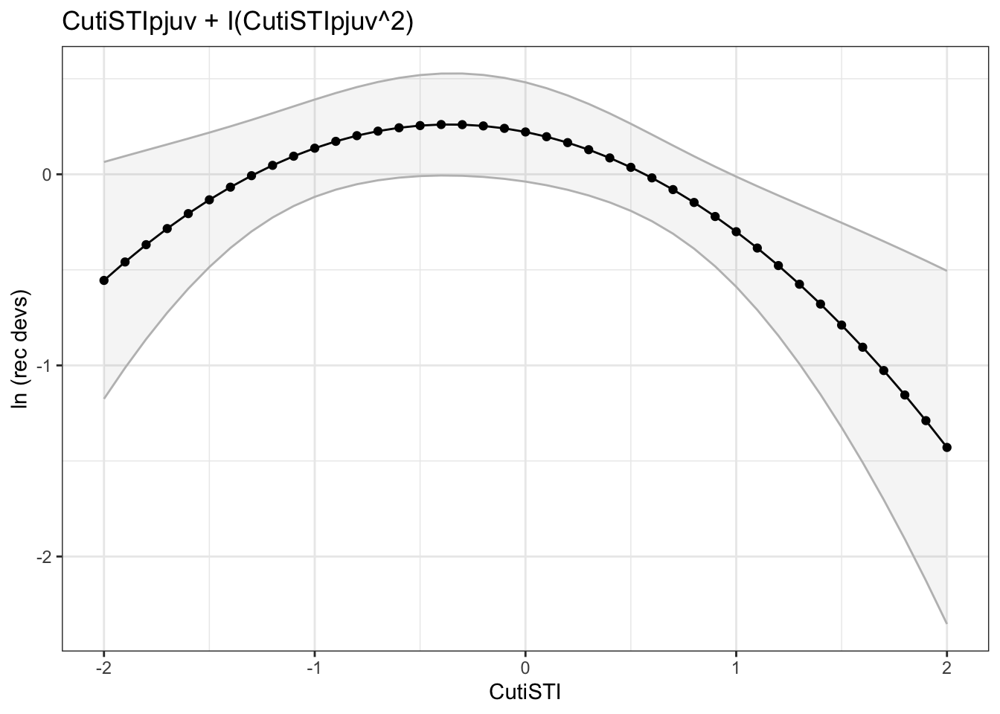
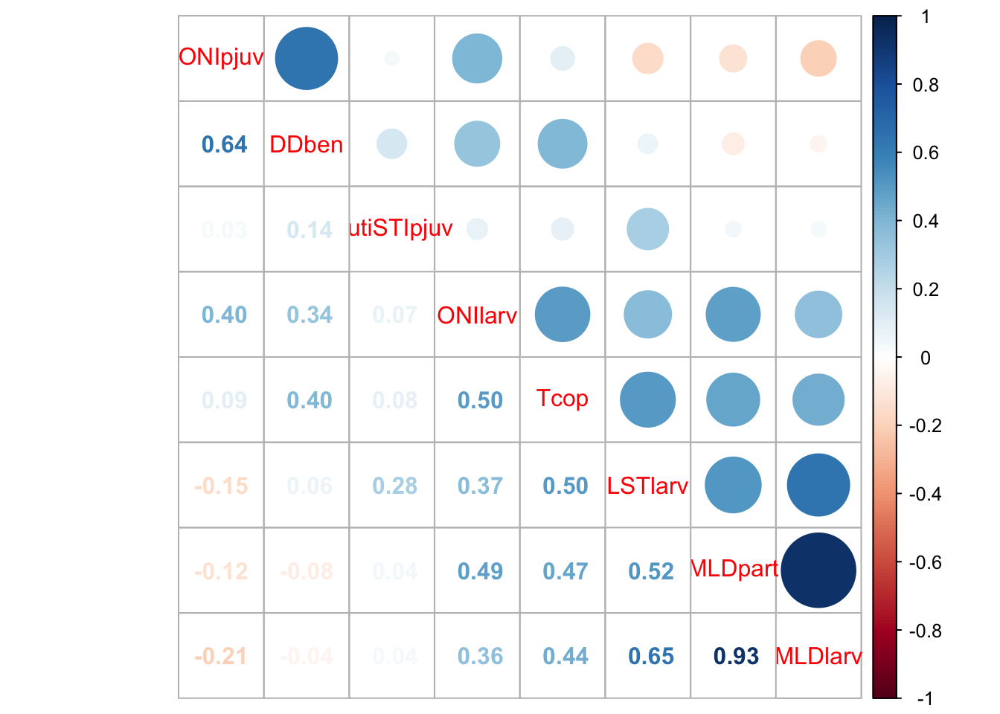
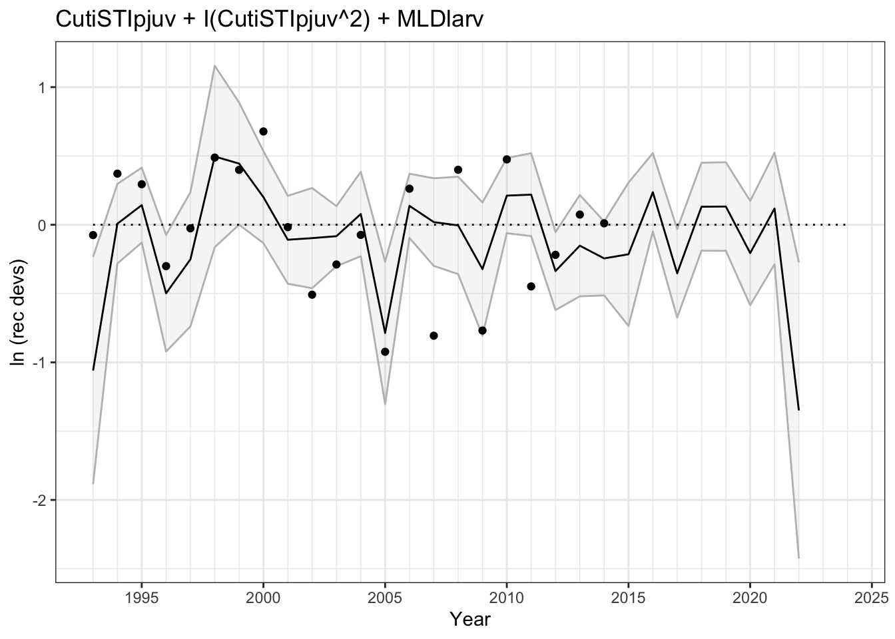

Y_rec ~ DDpre + DDlarv + DDpjuv + DDben + Tcop + Tpart + MLDpart +
MLDlarv + MLDpjuv + CSTlarv + CSTpjuv + LSTlarv + LSTpjuv +
HCIlarv + HCIpjuv + ONIpre + ONIlarv + ONIpjuv + PDOlarv +
PDOpjuv + LUSI + CutiSTIpjuv + CutiTUMIpjuv + BeutiTUMIpjuv +
BeutiSTIpjuv + header + I(LSTlarv^2) + I(ONIpre^2) + I(ONIlarv^2) +
I(CutiSTIpjuv^2)
<environment: 0x14256f028>LinearModelsEnvPred
Code set up
First we set up the appropriate packages and references. File paths will be in reference to where the .qmd is saved
Next we set up the appropriate directories and read in the data.
We can build the functions including quadratic terms and omitting data that are missing years. We pull out DDegg just so we do not exceed the limit of 31 terms - pulling this out was somewhat arbitrary based on Amandas perliminary results.
Then we define the full model, making sure that correlated covariates are omitted. We can turn on/off the dredge function and read in the saved table instead for the sake of time when knitting the document
Global model call: lm(formula = form_dredge, data = data_1, na.action = na.fail)
---
Model selection table
(Intercept) CutiSTIpjuv I(CutiSTIpjuv^2) DDlarv DDpre HCIlarv
49 0.2215 -0.2185 -0.3035
134217777 -2.0230 -0.2346 -0.2819
131073 -1.9780
2097 -1.0680 -0.2294 -0.2693 3.814e-05
131121 -0.8855 -0.1973 -0.2420
4145 0.3772 -0.2616 -0.2826 -0.3156
561 -0.5241 -0.2469 -0.2774 2.583e-05
4194353 0.1913 -0.2061 -0.2913
33554481 0.1735 -0.2517 -0.2771
268435505 -0.9949 -0.2475 -0.2795
524337 -4.1850 -0.2527 -0.3313
262193 -0.4035 -0.2045 -0.2592
65585 0.9017 -0.2393 -0.3277
LSTpjuv MLDlarv MLDpart MLDpjuv ONIpjuv PDOlarv Tcop Tpart R2
49 0.3663
134217777 0.2067 0.4363
131073 0.16020 0.2052
2097 0.4162
131121 0.08712 0.4135
4145 0.4108
561 0.4079
4194353 -0.1917 0.4074
33554481 0.111 0.4023
268435505 0.1211 0.3985
524337 0.4028 0.3957
262193 0.03991 0.3943
65585 5.841 0.3928
F df logLik AICc delta weight
49 5.203 4 -8.309 27.1 0.00 0.186
134217777 4.387 5 -7.080 28.2 1.04 0.111
131073 4.906 3 -10.688 28.8 1.67 0.081
2097 4.040 5 -7.448 28.9 1.78 0.077
131121 3.996 5 -7.496 29.0 1.87 0.073
4145 3.950 5 -7.546 29.1 1.97 0.069
561 3.904 5 -7.597 29.2 2.07 0.066
4194353 3.895 5 -7.606 29.2 2.09 0.065
33554481 3.814 5 -7.696 29.4 2.27 0.060
268435505 3.755 5 -7.762 29.5 2.40 0.056
524337 3.711 5 -7.811 29.6 2.50 0.053
262193 3.690 5 -7.834 29.7 2.55 0.052
65585 3.665 5 -7.862 29.7 2.61 0.051
Models ranked by AICc(x) It is pretty clear from the results that there is a fair amount of evidence that there is a nonlinear relationship between the spring transition of the Coastal Upwelling Transport Index. While this is not the most parsimonuous model, it is in many of the most supported models so lets run some summary stats to try and evaluate the weight of evidence behind. Note: because STI is inherently in the spring (April ish) it naturally falls during the pelagic juvenile stage.
First, lets look at the most parsimonious (fewest covariate terms) model:
Y_rec ~ MLDlarv
<environment: 0x144b4f238>
Call:
lm(formula = bf_mod_pars, data = data_1)
Residuals:
Min 1Q Median 3Q Max
-0.72565 -0.22907 0.05237 0.26138 0.76713
Coefficients:
Estimate Std. Error t value Pr(>|t|)
(Intercept) -1.97793 0.87784 -2.253 0.0363 *
MLDlarv 0.16024 0.07234 2.215 0.0392 *
---
Signif. codes: 0 '***' 0.001 '**' 0.01 '*' 0.05 '.' 0.1 ' ' 1
Residual standard error: 0.4232 on 19 degrees of freedom
Multiple R-squared: 0.2052, Adjusted R-squared: 0.1634
F-statistic: 4.906 on 1 and 19 DF, p-value: 0.03918Warning: Removed 1 row containing missing values or values outside the scale range
(`geom_line()`).Warning: Removed 10 rows containing missing values or values outside the scale range
(`geom_point()`).
The best model include Mixed Layer Depth during the larval stage. But this model does not fit the data very well for half the time series. the R^2 is only 0.20 and when we actually plot the results the model does not fit the time series of recruitment deviations very well between 2005 and 2014. This does not bode well at all for prediction and also indicates that if we used any other type of model selection criteria that has temporally structured cross-validation (such as Leave Future out CV) this model would not have very much support. RSE is pretty good (0.4) but that is really driven by well fit observations early in the TS.
We can see that the CUTI STI has a lot of support when considered as a non-linear relationship with a quadratic term. Lets look at it closer:
Y_rec ~ CutiSTIpjuv + I(CutiSTIpjuv^2)
<environment: 0x142749430>
Call:
lm(formula = bf_mod, data = data_1)
Residuals:
Min 1Q Median 3Q Max
-0.8252 -0.2304 0.1162 0.2454 0.5028
Coefficients:
Estimate Std. Error t value Pr(>|t|)
(Intercept) 0.22150 0.12365 1.791 0.09006 .
CutiSTIpjuv -0.21847 0.09705 -2.251 0.03711 *
I(CutiSTIpjuv^2) -0.30345 0.09963 -3.046 0.00696 **
---
Signif. codes: 0 '***' 0.001 '**' 0.01 '*' 0.05 '.' 0.1 ' ' 1
Residual standard error: 0.3882 on 18 degrees of freedom
Multiple R-squared: 0.3663, Adjusted R-squared: 0.2959
F-statistic: 5.203 on 2 and 18 DF, p-value: 0.01647Warning: Removed 2 rows containing missing values or values outside the scale range
(`geom_line()`).Warning: Removed 10 rows containing missing values or values outside the scale range
(`geom_point()`).

Our R^2 is much higher, 0.37 and our RMSE is 0.39, pretty close to the MLD_[larv]. If we look at the fit, it fits the time series more consistently through time which indicates that it should be less sensitive to our model selection procedure than MLD_[larv] would be.
Okay - so now lets quantify our weight of evidence behind the CUTI STI variable. In an ideal world I would use marginal improvement in RMSE for each predictor, but that is difficult to calculate over so many models, so instead I will try and parse down what I test in the GAM and LFO-CV (also very slow) by looking at the total AIC weight for each predictor instead. This takes some rearranging of the dredge output(ugh) as follows:
[1] 1 Predictor AICWeight
1 R2 0.996
2 Tpart 0.063
3 Tcop 0.094
4 PDOpjuv 0.087
5 PDOlarv 0.065
6 I(ONIpre^2) 0.011
7 ONIpre 0.092
8 ONIpjuv 0.119
9 I(ONIlarv^2) 0.037
10 ONIlarv 0.104
11 MLDpjuv 0.080
12 MLDpart 0.145
13 MLDlarv 0.245
14 LSTpjuv 0.060
15 I(LSTlarv^2) 0.031
16 LSTlarv 0.100
17 HCIpjuv 0.058
18 HCIlarv 0.070
19 DDpre 0.084
20 DDpjuv 0.049
21 DDlarv 0.064
22 DDegg 0.071
23 DDben 0.099
24 CutiTUMIpjuv 0.057
25 I(CutiSTIpjuv^2) 0.192
26 CutiSTIpjuv 0.294
27 CSTpjuv 0.057
28 CSTlarv 0.062
29 BeutiTUMIpjuv 0.070
30 BeutiSTIpjuv 0.062It is also worth noting that the correlation coefficient for both of these is only 0.11. This made me really interested to see what the fit of the model with all three covariates was, which was also included in the top 5 models with delta AIC_c less than 2. So lets look at what that fit looks like:
Call:
lm(formula = Y_rec ~ CutiSTIpjuv + I(CutiSTIpjuv^2) + MLDlarv,
data = data_1)
Residuals:
Min 1Q Median 3Q Max
-0.7553 -0.1996 0.1053 0.2538 0.5530
Coefficients:
Estimate Std. Error t value Pr(>|t|)
(Intercept) -0.88547 0.95421 -0.928 0.3664
CutiSTIpjuv -0.19725 0.09777 -2.018 0.0597 .
I(CutiSTIpjuv^2) -0.24202 0.11174 -2.166 0.0448 *
MLDlarv 0.08712 0.07448 1.170 0.2582
---
Signif. codes: 0 '***' 0.001 '**' 0.01 '*' 0.05 '.' 0.1 ' ' 1
Residual standard error: 0.3843 on 17 degrees of freedom
Multiple R-squared: 0.4135, Adjusted R-squared: 0.31
F-statistic: 3.996 on 3 and 17 DF, p-value: 0.02532Warning: Removed 2 rows containing missing values or values outside the scale range
(`geom_line()`).Warning: Removed 10 rows containing missing values or values outside the scale range
(`geom_point()`).
Helpful to see, but it does not really improve the fit of the model that much and MLDlarv is not significant. The last thing I am curious to take a peek at is how correlated some of the most meaningful predictors are. We can do this two ways 1) what is in the tope models (del AIC<2) or look at the one that have AIC total weight of ten or higher. A handful pop out as meeting both of those criteria: CUTI STI, CUTI STI^2, MLDlarv, ONIpjuv, Tcop. Overall, for top predictors CUTI STI is and DDben/ONIpjuv seem to be capturing uniqe variation not captured by the other variables but the correlation across the other well supported predictors seem to be capturing the same flavor of variability (correlation of 0.4 or higher across 3+ covariates)
Global model call: lm(formula = form_dredge, data = data_1, na.action = na.fail)
---
Model selection table
(Intrc) CtSTI CtSTI^2 DDlrv DDpre HCIlr MLDlr ONIpj
49 0.2215 -0.2185 -0.3035
134217777 -2.0230 -0.2346 -0.2819
131073 -1.9780 0.16020
2097 -1.0680 -0.2294 -0.2693 3.814e-05
131121 -0.8855 -0.1973 -0.2420 0.08712
4145 0.3772 -0.2616 -0.2826 -0.3156
561 -0.5241 -0.2469 -0.2774 2.583e-05
4194353 0.1913 -0.2061 -0.2913 -0.1917
33554481 0.1735 -0.2517 -0.2771
268435505 -0.9949 -0.2475 -0.2795
PDOlr Tcop Tpart R2 F df logLik AICc delta weight
49 0.3663 5.203 4 -8.309 27.1 0.00 0.221
134217777 0.2067 0.4363 4.387 5 -7.080 28.2 1.04 0.131
131073 0.2052 4.906 3 -10.688 28.8 1.67 0.096
2097 0.4162 4.040 5 -7.448 28.9 1.78 0.091
131121 0.4135 3.996 5 -7.496 29.0 1.87 0.086
4145 0.4108 3.950 5 -7.546 29.1 1.97 0.082
561 0.4079 3.904 5 -7.597 29.2 2.07 0.078
4194353 0.4074 3.895 5 -7.606 29.2 2.09 0.077
33554481 0.111 0.4023 3.814 5 -7.696 29.4 2.27 0.071
268435505 0.1211 0.3985 3.755 5 -7.762 29.5 2.40 0.066
Models ranked by AICc(x) Predictor AICWeight
1 R2 0.996
26 CutiSTIpjuv 0.294
13 MLDlarv 0.245
25 I(CutiSTIpjuv^2) 0.192
12 MLDpart 0.145
8 ONIpjuv 0.119
10 ONIlarv 0.104
16 LSTlarv 0.100
23 DDben 0.099
3 Tcop 0.094
7 ONIpre 0.092
4 PDOpjuv 0.087
19 DDpre 0.084
11 MLDpjuv 0.080
22 DDegg 0.071
18 HCIlarv 0.070
29 BeutiTUMIpjuv 0.070
5 PDOlarv 0.065
21 DDlarv 0.064
2 Tpart 0.063
28 CSTlarv 0.062
30 BeutiSTIpjuv 0.062
14 LSTpjuv 0.060
17 HCIpjuv 0.058
24 CutiTUMIpjuv 0.057
27 CSTpjuv 0.057
20 DDpjuv 0.049
9 I(ONIlarv^2) 0.037
15 I(LSTlarv^2) 0.031
6 I(ONIpre^2) 0.011
I thought I was done exploring but now I want to look at one last model…there seems to be 3 patterns of environmental varibility that are somewhat unique: variation captured by MLDlar, ONIpjuv (and DDben), and finally, CUTI STI. So lets try looking at the full model that represents each of these 3 axes…
Call:
lm(formula = Y_rec ~ CutiSTIpjuv + I(CutiSTIpjuv^2) + MLDlarv +
ONIpjuv, data = data_1)
Residuals:
Min 1Q Median 3Q Max
-0.8256 -0.1520 0.1182 0.2260 0.4776
Coefficients:
Estimate Std. Error t value Pr(>|t|)
(Intercept) -0.62752 1.04292 -0.602 0.5558
CutiSTIpjuv -0.19412 0.09949 -1.951 0.0688 .
I(CutiSTIpjuv^2) -0.24921 0.11408 -2.185 0.0441 *
MLDlarv 0.06520 0.08242 0.791 0.4405
ONIpjuv -0.13088 0.19446 -0.673 0.5105
---
Signif. codes: 0 '***' 0.001 '**' 0.01 '*' 0.05 '.' 0.1 ' ' 1
Residual standard error: 0.3906 on 16 degrees of freedom
Multiple R-squared: 0.4297, Adjusted R-squared: 0.2871
F-statistic: 3.014 on 4 and 16 DF, p-value: 0.04967Warning: Removed 2 rows containing missing values or values outside the scale range
(`geom_line()`).Warning: Removed 10 rows containing missing values or values outside the scale range
(`geom_point()`).
CutiSTIpjuv I(CutiSTIpjuv^2) MLDlarv ONIpjuv
1.264088 1.577011 1.523050 1.207381 …this result is interesting. We get an R^2 of of 0.43. We don’t need to be extra concerned about multicollinearity, all of the variance inflation factors are well below 2 but probably worth noting that some of the covariates are not significant from a frequentist perspective BUT the interesting part of this model is that we do see improved fit.
I am interested in looking at the patterns of variability from a different lens so I am going to apply some dimension reduction techniques:
arranged
Now, from an assessment stand point this is all incredibly helpful for knowing what to look at but is not out end all be all model. My thought process moving forward is to apply some of Kristen’s hake code to:
look at GAMs which will have less of a penalty for the addition of a non-linear relationship with CUTI STI compared to other models. It will also give us a bit more flexibility in the shape of the non-linear relationship which may help the model fit better and / or improve predictive capacity.
Use LFO-CV and perform a similar comparison with the CV as AIC and use the marginal improvement in RMSE for each predictor
This will help use approach what is the best predictor from multiple angles.
And all of this is to say with the very big caveat that when we eventually have recruitment deviations through 2021ish we may get completely different results.